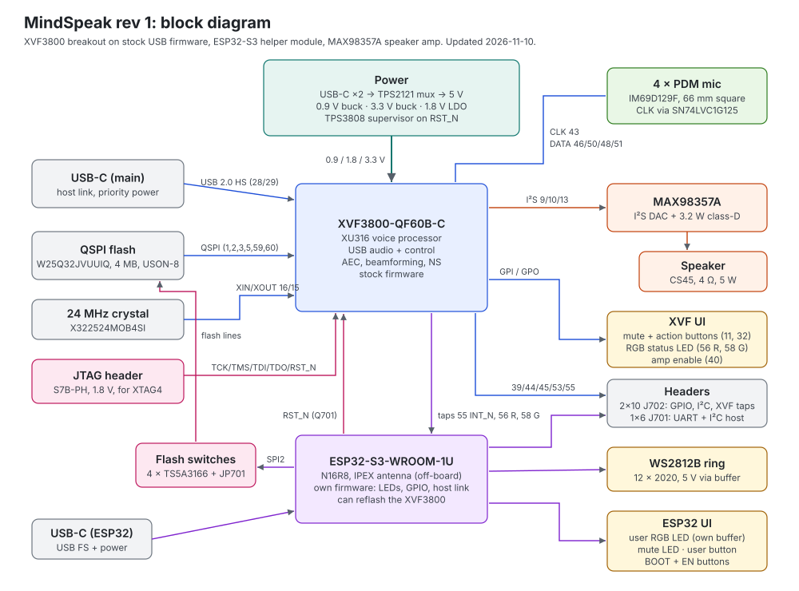
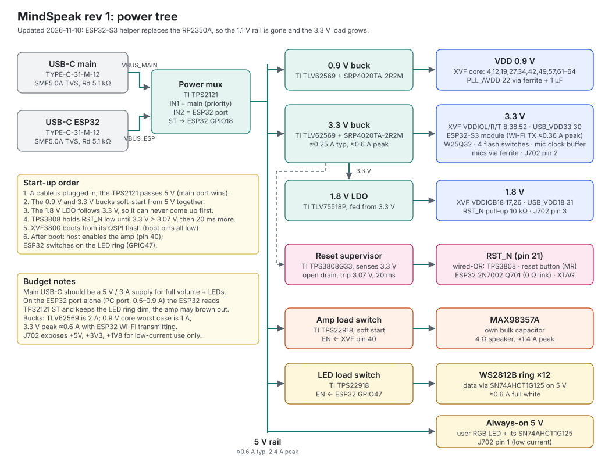
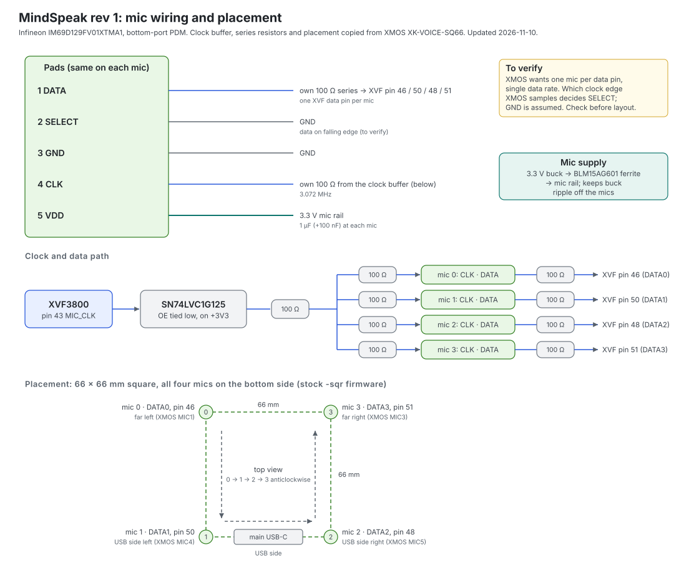
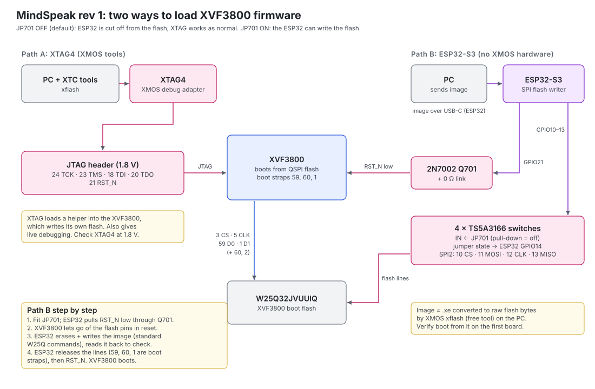

Decisions and schematic status · 10 November 2026 · Status: schematic complete, awaiting review; no PCB layout or orders yet
1. What the board is
The voice satellite is a small USB board that listens to a room and plays sound back. It is the "ears and mouth" of a voice assistant: the board picks up speech cleanly, and a host computer does the thinking.
Listening: four microphones feed an XMOS XVF3800 voice processor. It removes echo and noise, works out which direction someone is speaking from, and sends clean audio to the host over USB.
Speaking: a small amplifier drives a 3–5 W speaker.
Helper: an ESP32-S3 microcontroller handles everything the voice chip's stock firmware does not. That covers the LED ring, buttons, a second USB port, a header for a host and reprogramming the voice chip.
Rev 1 is a prototype for testing the design, not a product. A version with a Raspberry Pi CM5 on board is planned for rev 2.

Figure 1. Block diagram. The XVF3800 sits in the centre with its own USB-C, memory and clock on the left. The mics, speaker amplifier and buttons are on the right, power is at the top, and the ESP32-S3 helper with its own USB-C, LED ring and expansion headers is at the bottom.
2. Key decisions and why
Area
Decision
Why
Design basis
Designed from the manufacturers' datasheets. XMOS's own reference board (XK-VOICE-SQ66) is the guide for mic wiring and pin use.
Copying a third-party board (Seeed ReSpeaker) would bring over its unknowns and licence issues. The XMOS board is the vendor's reference.
Voice firmware
The XVF3800 runs XMOS's stock USB firmware, unmodified (square-mic build).
The firmware source needs an XMOS account and a silicon purchase. Keeping it stock keeps the voice processing proven, and anything extra goes on the ESP32.
Helper chip
ESP32-S3-WROOM-1U-N16R8 module with an external antenna connector.
Adds Wi-Fi/Bluetooth and reuses support circuits from the team's existing controller board. The 16 MB version was cheaper than the 8 MB one.
Sound out
One MAX98357A digital amplifier driving the speaker directly. No audio codec and no headphone jack.
The amplifier needs no setup software, so it works with the stock firmware. A speaker is the goal; XMOS's board only drives headphones.
Microphones
4 × Infineon IM69D129 digital mics on the corners of a 66 mm square, on the underside, in XMOS's order.
The stock "square" firmware expects exactly this layout.
Power input
Either USB-C port can power the board. A TPS2121 switches between them automatically and prefers the main port.
The board keeps running whichever cable is plugged in.
Regulators
Two efficient switching (buck) regulators make 0.9 V and 3.3 V, and a small linear regulator makes 1.8 V from 3.3 V.
An all-linear design would waste about 1.2 W as heat.
Reset
A dedicated reset chip (TPS3808) holds the voice chip in reset until 3.3 V is stable.
The chip's built-in reset does not watch the 3.3 V supply, and its datasheet requires 3.3 V to be valid first.
Programming
Two routes into the voice chip's memory: XMOS's XTAG4 debugger, or the ESP32 writing the memory directly.
A board can be updated without special XMOS hardware, and the debugger remains available for fault-finding.
Manufacturing
JLCPCB builds and assembles the whole board. Small passive parts are 0402 size, from JLC's "Basic" stock first.
No hand soldering, and lower assembly fees. Fine-pitch chip packages are therefore acceptable.
How the design changed along the way
Copy Seeed → design from datasheets. The first plan copied the Seeed ReSpeaker XVF3800 board. On 9 Nov this changed to an original design. On 10 Nov XMOS's own reference board became the main point of comparison, which corrected several pin roles and the mic clock wiring.
Two audio paths → one amplifier. Rev 1 first carried both a simple amplifier and Seeed's codec-plus-amplifier route, with links to pick one. Because the firmware stays stock, the codec route was dropped on 9 Nov. The XMOS comparison on 10 Nov confirmed that choice.
Linear regulators → buck regulators. The first power plan used linear regulators from 5 V. It was rejected on 9 Nov because of the heat.
RP2350A → ESP32-S3. A Raspberry Pi RP2350A was the helper until 10 Nov, when the ESP32-S3 module replaced it. An option for the ESP32 to boot the voice chip directly was removed at the same time; it now only writes the chip's flash memory.
3. Power
All power comes from 5 V USB. The board does not use USB Power Delivery. A 5 V / 3 A supply is needed for full speaker volume with the LEDs on.
Load: about 0.7 A typical and 2.7 A at peak. The peak is set by the speaker, the LED ring and the ESP32's Wi-Fi bursts, and it stays under the input switch's ≈3.2 A limit.
Switched loads: the speaker amplifier and the LED ring each have their own switch, so they can be turned off.
Start-up: both bucks start together, and the reset chip releases the voice processor only once 3.3 V is good.
Weak USB ports: on a PC port alone, the ESP32 keeps the LEDs dim and limits Wi-Fi bursts.

Figure 2. Power tree and start-up order. Two USB-C inputs feed the TPS2121 priority switch, which makes the 5 V rail. 5 V feeds the 0.9 V and 3.3 V bucks, the amplifier and LED-ring switches, and the user LED. The 3.3 V rail feeds the ESP32-S3 and the 1.8 V regulator, and the TPS3808 holds the voice chip in reset until 3.3 V is valid.
4. Microphones
The quality of the voice processing depends on where the mics are. The stock firmware assumes four mics on the corners of a 66 mm square, numbered anticlockwise.
Layout: the board follows that layout and XMOS's mic order exactly.
Clock: one clock line is buffered once and then split, with a small resistor into each mic, as on XMOS's board. This keeps the clock clean at all four corners.
Data: each mic sends its data back to the voice chip through its own resistor.

Figure 3. Mic wiring and placement. XVF3800 pin 43 drives the SN74LVC1G125 clock buffer, then a shared 100 Ω resistor, then a separate 100 Ω into each mic's clock. Each mic's data returns through its own 100 Ω. The four mics sit on the corners of the 66 mm square, numbered 0–3 anticlockwise seen from the top.
5. Loading the voice firmware
The XVF3800 starts up from its own flash memory chip. That memory can be filled in two ways:
Path A, XMOS XTAG4 debugger: plugs into the 1.8 V debug header. This is the standard XMOS route, and the only one that also allows live debugging.
Path B, ESP32: fitting a jumper lets the ESP32 hold the voice chip in reset, connect to the flash through four small analogue switches, write the image and read it back, then disconnect and release the reset.
With the jumper removed, the switches stay off and the ESP32 cannot touch the flash.

Figure 4. The two ways to load XVF3800 firmware. Path A goes from the XTAG4 on the JTAG header through the XVF3800 to the flash. Path B, enabled by jumper JP701, has the ESP32-S3 hold the XVF3800 in reset through Q701 and write the flash over SPI through four TS5A3166 switches.
6. Schematic status
The rev 1 schematic is drawn in KiCad 10 on nine A4 sheets: overview · USB and power input · regulators · XVF3800 voice chip · its memory, buttons and LEDs · audio (mics, amplifier, speaker) · ESP32-S3 · ESP32 switches and headers · LED ring.
Electrical rules check: 0 errors and 0 warnings.
Connections: the netlist KiCad exports matches the intended connections.
Parts: every assembled part has an LCSC (JLCPCB) part number, and every part's symbol and footprint was checked pin by pin against its datasheet.
7. Cost and delivery (JLCPCB quote, 10 Nov 2026)
JLCPCB quotes the bare boards and the components separately. No MindSpeak layout exists yet, so the board quote uses the team's controller board (4 layers, 88.9 × 88.9 mm) as a reference PCB. A bare board's price depends on its size, layer count and options, not on the circuit. The components are priced from the real MindSpeak BOM.
These figures are more accurate than an estimate built from the major chips alone. Fees not yet checked may move them up or down, but the final price should stay close to these numbers.
Board options: 5 boards (JLC's minimum), 1.6 mm FR-4, 1 oz outer copper, assembled on both sides, edge rails added by JLC.
Via filling: filled and capped vias were chosen because the tiny chip packages need vias inside their pads. That adds $21.05 to the board price.
Item
2 boards
5 boards
Components (JLC BOM tool)*
$90.54
$212.71
Bare PCBs, 5 made
$29.05
$29.05
Fastest build (2–3 days)
+ $66.20
+ $66.20
Shipping, cheapest: UPS Saver
$9.76
$9.76
Shipping, fastest: DHL Express
$25.31
$25.31
* The BOM has 60 lines, but JLC shows only 54–55 selected. That's because several lines use the same part: for example, the six buttons are listed separately because each has its own label. JLC merges them into one order line. All parts are included.
Option
2 boards
5 boards
Delivery
Cheapest total
$129.35
$251.52
3-day build + 5–7 business days by UPS: about 8–10 business days
Quickest delivery
$211.10
$333.27
2–3 day build + 2–5 business days by DHL: about 4–8 business days
Not included in these totals:
Assembly fees: SMT assembly, feeder loading and setup still show "–" on the quote and appear only at the next checkout step.
Customs duty: the last time a PCB was imported, customs came to as much as ₹9,000 (about $100).
Coupons: $20 and $30 coupons are offered but not applied.
The build times are as shown on the quote, and JLC may add assembly days on top. The quote screenshots are saved in docs/report/jlc_quote_2026-11-10/.
8. Open questions and next steps
Questions still to settle:
Programming path B: the extra loading that the ESP32's switches add to the voice chip's memory lines has to be confirmed at boot speed. The fallback is a removable link.
Firmware behaviour: two details are unconfirmed, whether the stock firmware ever drives its I²C pins as a master, and whether its LED outputs are active-high.
Over-voltage cut-off: it is set at 5.57 V, which a charger sitting at the 5.5 V USB limit could trip.
Manufacturability: the smallest chip packages still need checking against JLCPCB's manufacturing rules.
Layout: the ESP32's Wi-Fi antenna and cable must sit away from the mics.
Next steps: (1) review the schematic; (2) decide whether later edits are made by hand in KiCad; (3) lay out the PCB on 4 layers, placing the mic square and the ESP32 first; (4) recheck stock just before ordering.